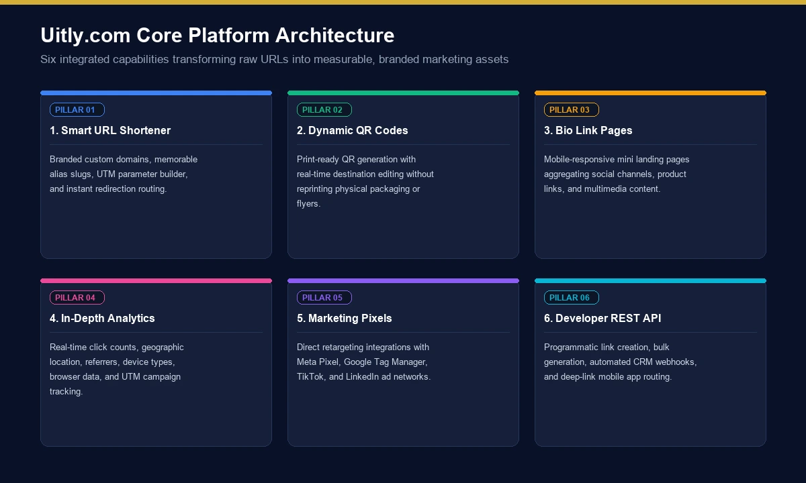
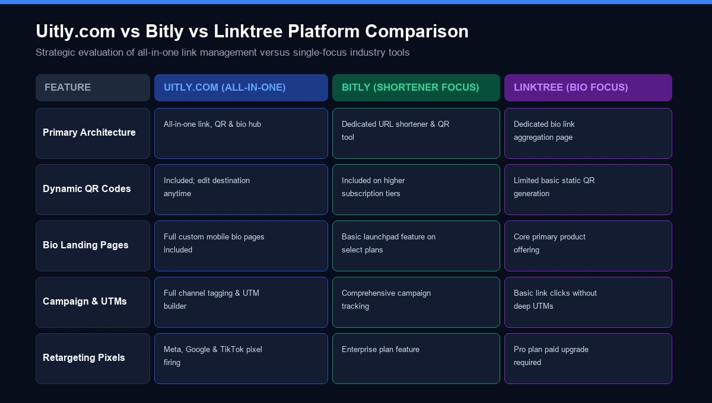
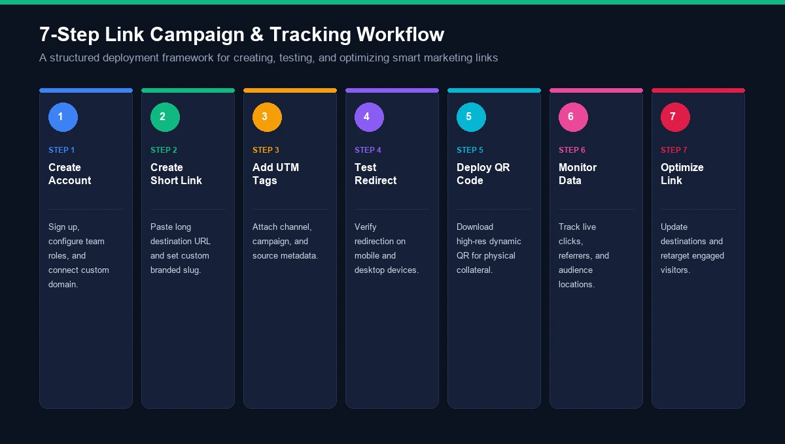

If you searched for uitly com, you are probably trying to understand what the platform does, whether it is simply a URL shortener, or whether it offers a broader set of marketing and link-management tools.
The answer is that Uitly.com currently presents itself as more than a basic link shortener.
Its website describes a platform built around dynamic links, QR codes, bio pages and analytics, with additional features such as branded domains, campaign organization, team collaboration, integrations, tracking pixels, notifications and a developer API.
That makes Uitly particularly relevant to marketers, creators, businesses, agencies and anyone who needs to manage links across digital and offline campaigns.
But there is another side worth understanding. A URL-shortening service sits between a user and the final destination, so questions about analytics, redirects, privacy, link reliability and domain trust naturally matter.
This guide explains what Uitly.com is, how its main features work, what businesses can use it for, how to evaluate the platform, and what to consider before making it part of a long-term marketing workflow.
What Is Uitly Com?
Uitly com refers to the Uitly.com website and its link-management platform.
At its core, Uitly provides tools for creating and managing shortened links. Instead of sharing a long URL containing multiple parameters, a user can create a shorter link that redirects visitors to the intended destination.
But the platform goes beyond simple URL shortening.
The current Uitly homepage lists four central capabilities:
- URL shortener
- Bio pages
- QR codes
- Link analytics
It also promotes smart deep linking, branded domains, campaigns and channels, API access, team collaboration and integrations.
Uitly Com at a Glance
Feature | Uitly.com |
|---|---|
URL shortener | Yes |
Short-link analytics | Yes |
QR code generator | Yes |
Dynamic QR codes | Yes |
Bio pages | Yes |
Branded domains | Yes |
Campaign organization | Yes |
Deep linking | Yes |
Team collaboration | Yes |
Tracking pixels | Yes |
Third-party integrations | Yes |
Developer API | Yes |
Free package | Available according to Help Center |
Account registration | Yes |
Link reporting | Yes |
The important distinction is that Uitly is better described as a link-management and campaign-tracking platform than as a basic URL shortening website.
How Does Uitly Com Work?
The basic concept is straightforward.

Imagine you have this long URL:
https://example.com/products/summer-sale?campaign=instagram&utm_source=social
Instead of publishing that entire address, you can create a shorter Uitly link.
A visitor clicks the short URL.
Uitly processes the request and redirects the visitor to the destination.
At the same time, the platform can provide analytics associated with the link, depending on the available configuration.
The current site says users can analyze information such as clicks, country and referrer.
This creates a simple chain:
Original URL → Short link → Visitor → Destination → Analytics
For marketers, that extra measurement layer is often the real reason to use a link-management platform.
Uitly Com URL Shortener
The URL shortener is the foundation of the platform.
A short link can be useful when a destination URL is:
- Very long
- Difficult to remember
- Filled with tracking parameters
- Being shared on social media
- Printed on marketing materials
- Included in advertisements
- Used in SMS campaigns
- Shared verbally
Why Short Links Matter
A shorter URL can improve the appearance of a campaign.
For example:
Long URL
example.com/collections/summer/products/product-name?utm_source=instagram&utm_medium=social
Short URL
uitly.com/abc123
The destination remains the important part; the short link simply provides a cleaner intermediary.
However, marketers should remember that shortening a URL does not automatically improve SEO rankings.
The primary purpose is link management, usability and measurement, not a direct Google ranking boost.
Uitly Com Analytics
Analytics are one of the most useful features for marketing teams.
A short link can tell you much more than whether someone clicked it.
According to the current Uitly website, the platform can provide information including:
- Number of clicks
- Country
- Referrer
- User behavior around shared links
The platform describes this as a way to understand users and optimize campaigns.
Why Link Analytics Matter
Suppose a business promotes the same product in five places:
- Printed flyer
Instead of sending everyone to the same untracked URL, the business can use separate short links.
For example:
Channel | Link |
|---|---|
Short link A | |
Short link B | |
Short link C | |
Short link D | |
Flyer | Short link E |
Now the business can compare performance.
This makes link analytics particularly useful for campaign attribution.
What Analytics Should You Monitor?
Clicks alone are not enough.
A good marketing analysis can look at:
- Total clicks
- Unique visitors
- Referral source
- Geographic distribution
- Device type
- Campaign
- Conversion rate
- Cost per visitor
- Cost per acquisition
Not every metric will necessarily be available under every plan or configuration, so businesses should verify the current dashboard and plan details before building reporting around a specific metric.
Uitly Com QR Codes
QR codes connect physical marketing with digital destinations.
Uitly currently promotes customizable and trackable dynamic QR codes. The homepage also highlights customizable QR styles and frames.
This is useful because a QR code printed on physical material can direct people to an online destination.
Potential applications include:
- Restaurant menus
- Product packaging
- Business cards
- Posters
- Flyers
- Event tickets
- Retail displays
- Brochures
- Real-estate signage
- Conference materials
Static vs Dynamic QR Codes
The distinction is important.
Static QR code:
The destination is embedded directly into the QR code.
Dynamic QR code:
The QR code points through a managed destination, allowing the destination or tracking configuration to be changed without necessarily replacing the printed code.
For campaigns that run for months, dynamic QR codes can be more flexible.
Uitly Com Bio Pages
Another major feature is the bio page.
A bio page allows users to place multiple important links on one mobile-friendly landing page.
Instead of putting five different URLs in an Instagram profile, for example, you can have one profile link leading to a page containing:
- Website
- Store
- YouTube channel
- Newsletter
- Products
- Contact information
- Other social profiles
Uitly describes its bio pages as mobile-optimized landing pages designed to showcase multiple important links in one place.
Who Can Use a Bio Page?
Bio pages can be useful for:
- Influencers
- Creators
- Coaches
- Freelancers
- Consultants
- Agencies
- Small businesses
- Musicians
- Podcasters
- E-commerce brands
The concept is similar to other “link in bio” services, but having short links, QR codes and analytics within the same ecosystem can simplify campaign management.
Uitly Com Branded Domains
Branding becomes especially important when businesses share links frequently.
Uitly promotes branded domain names, allowing users to use their own domain for short links rather than relying entirely on a generic platform domain.
For example, instead of:
uitly.com/abc123
a business could potentially configure something based on its own branded domain, subject to the platform's current configuration and plan requirements.
Why Branded Short Links Matter
A branded link can provide:
- Greater brand recognition
- More control over link identity
- Better consistency
- Increased familiarity
- More professional campaign presentation
For companies running large campaigns, this can be more valuable than simply having the shortest possible URL.
Uitly Com Campaigns and Channels
Managing dozens of individual links can become messy.
Uitly's current platform includes Campaigns & Channels, allowing users to group and organize links, bio pages and QR codes. The platform says campaigns can also provide aggregated statistics.
For an agency, this can create a structure such as:
Client → Campaign → Channel → Link
For example:
Brand A
→ Summer Sale
→ QR Poster
This organization can make reporting much easier.
Uitly Com Deep Linking
The platform also promotes smart deep linking.
Deep linking generally means sending users directly to a specific location rather than simply dropping them on a generic homepage.
For mobile applications, deep linking can potentially direct a user into a particular screen inside an app.
This can improve the path between:
Advertisement → Click → Relevant content
rather than:
Advertisement → Homepage → Search → Product
The exact implementation depends on the application, operating system and configuration, so businesses should test deep links across relevant devices before launching a major campaign.
Uitly Com Developer API
For developers, one of the more important capabilities is the Developer API.
Uitly currently advertises an API that can be used to build custom applications or extend an existing application with its tools.
An API can be useful when a company does not want to manually create every link.
For example, an e-commerce platform might automatically generate a trackable short URL whenever a new product campaign is launched.
A developer could potentially connect:
Internal system → API → Short link → Campaign analytics
The exact endpoints, authentication requirements and limits should be checked against Uitly's current developer documentation before implementation.
Uitly Com Integrations
Marketing rarely happens inside one platform.
A campaign might involve:
- Google Analytics
- Google Tag Manager
- TikTok
- Email software
- Advertising platforms
- CRM systems
Uitly's current homepage displays integrations including Bing, Reddit, Google Analytics, LinkedIn, Pinterest, Quora, TikTok and Adroll, along with tracking-pixel functionality.
The practical value is not simply having many logos on a page.
The real question is:
Can the integration provide useful data for the workflow you actually run?
That is something businesses should test before committing to a specific implementation.
Uitly Com Tracking Pixels
Tracking pixels can add another layer of campaign measurement.
The platform says users can add custom pixels from providers such as Facebook and Google Tag Manager to track events.
This can be useful for marketers who need to connect link clicks with broader advertising and conversion workflows.
However, tracking technologies have privacy implications.
Businesses should consider:
- Consent requirements
- Cookie policies
- Regional privacy laws
- Data collection
- Third-party tracking
- Retention policies
A tracking feature should not be enabled blindly simply because it is technically available.
Uitly Com Team Collaboration
Link management becomes more complicated when multiple people are working on campaigns.
Uitly currently promotes team collaboration, allowing users to invite teammates and assign privileges across different workspaces.
This can be useful for:
- Marketing agencies
- In-house marketing departments
- Franchise businesses
- E-commerce teams
- Growth teams
- Social media teams
A good permission system reduces the risk of everyone having unrestricted access to every campaign.
Uitly Com Pricing
Pricing is one area where users should check the platform directly because software plans can change.
Uitly's current Help Center states that users can start with a free package and upgrade when they want premium features.
The safest way to evaluate pricing is not to focus only on the monthly subscription.
Consider the total requirements:
Pricing Factor | What to Check |
|---|---|
Free plan | Number of links and available features |
Paid plan | Monthly/annual cost |
QR codes | Static vs dynamic availability |
Analytics | Which metrics are included |
Branded domains | Availability and limits |
Team members | Number of seats |
API | Availability and usage limits |
Tracking pixels | Included or paid |
Link limits | Number of active links |
Data retention | How long analytics remain available |
Because these limits can change, verify the current pricing page before purchasing or migrating an established campaign.
Is Uitly Com Free?
Uitly's Help Center currently says that users can start with a free package and upgrade to access premium features.
“Free” should not automatically be interpreted as “all features are free.”
Marketing platforms commonly reserve advanced capabilities such as:
- More analytics
- Branded domains
- Team access
- Higher usage limits
- Advanced tracking
- API access
for higher tiers.
Always check the current plan comparison before choosing a package.
Is Uitly Com Legit?
This question deserves a careful answer.
The current Uitly.com website is clearly operational and exposes a public URL-shortening interface, account registration, product information, a help center and contact page.
The platform also provides a dedicated Report Link page where users can submit potentially risky or dangerous short links for review.
These are useful transparency signals.
However, third-party reputation services have raised some caveats. For example, ScamAdviser currently reports that the site's ownership information is hidden through WHOIS privacy and notes that its own automated assessment is not a substitute for a current security review.
Those observations do not establish that Uitly is fraudulent.
WHOIS privacy is common and does not, by itself, prove malicious behavior.
A more reasonable conclusion is:
Uitly.com is an operating link-management website, but users should still apply normal due diligence before making it a critical part of their marketing infrastructure.
Is Uitly Com Safe to Use?
Safety has several layers.
Technical Safety
The website uses HTTPS, which protects the connection between the browser and the website during transmission.
But HTTPS alone does not guarantee that every destination behind a shortened URL is safe.
Link Safety
A URL-shortening service can redirect visitors to destinations controlled by the link creator.
That means a short link can hide the final URL.
This is one reason Uitly maintains a reporting mechanism for potentially risky links.
Account Security
If you use an account, follow standard practices:
- Use a unique password.
- Enable additional security controls if offered.
- Avoid sharing credentials.
- Limit team permissions.
- Review connected integrations.
- Remove access when an employee leaves.
Business Data
If analytics or tracking pixels are involved, also review:
- Privacy policy
- Data processing
- Analytics retention
- Third-party services
- Cookie requirements
- Regional compliance
Uitly Com for Social Media Marketing
Social media is one of the most obvious use cases.
A creator or business can use Uitly for:
- Instagram profile links
- TikTok campaigns
- LinkedIn posts
- Facebook promotions
- YouTube descriptions
- Influencer campaigns
- Social advertisements
The key benefit is that a short link can be easier to share while analytics can provide information about campaign performance.
Example Social Campaign
Suppose an online store launches a new product.
The marketer creates:
- Instagram link
- TikTok link
- Facebook link
- Influencer link
- QR code
Each can point toward the same product page while remaining separately measurable.
That creates a simple attribution structure.
Uitly Com for Small Businesses
Small businesses often do not need an enormous marketing stack.
A single platform combining short links, QR codes, bio pages and analytics can reduce the number of separate tools they need to manage.
Potential examples include:
Restaurant
QR code → digital menu
Real Estate Agent
Bio page → property listings + WhatsApp + contact form
Local Retailer
Short link → promotional landing page
Consultant
Bio page → booking + LinkedIn + website + lead magnet
Event Organizer
QR code → registration page
The value comes from matching the feature to a real business workflow.
Uitly Com for Agencies
Agencies can use link management differently.
Instead of creating links randomly, an agency can build a standardized system.
For example:
Client
→ Campaign
→ Platform
→ Creative
→ Short link
→ Analytics
This structure makes campaign reporting easier.
The team collaboration and campaign features promoted by Uitly can be particularly relevant here.
Uitly Com vs a Basic URL Shortener
Not every business needs a full link-management platform.
If you only need to shorten one occasional URL, a basic shortener may be enough.
If you need:
- QR codes
- Bio pages
- Analytics
- Campaign organization
- Branded domains
- Team access
- API automation
then a broader platform becomes more relevant.

Need | Basic URL Shortener | Uitly |
|---|---|---|
Short links | Yes | Yes |
QR codes | Sometimes | Yes |
Bio pages | Usually no | Yes |
Analytics | Basic/varies | Yes |
Branded domains | Varies | Advertised |
Campaign management | Limited | Yes |
Team collaboration | Limited | Yes |
API | Varies | Yes |
Tracking pixels | Rare | Yes |
Multiple marketing tools | Limited | Yes |
This is why the platform is better understood as a link-management ecosystem rather than just a short URL generator.
Uitly Com vs Bitly
Bitly is one of the most recognized names in link management.
A comparison should focus on the actual requirements rather than simply choosing a famous brand.
Feature | Uitly | Bitly |
|---|---|---|
URL shortening | Yes | Yes |
QR codes | Yes | Yes |
Analytics | Yes | Yes |
Bio pages | Yes | Available through Bitly ecosystem/products |
Branded links | Yes | Yes |
API | Yes | Yes |
Campaign tracking | Yes | Yes |
Market maturity | Smaller platform | Long-established |
Best comparison point | Feature breadth and workflow | Enterprise-scale link management |
The right choice depends on pricing, required integrations, analytics depth, support, API needs and organizational scale.
Uitly Com vs Linktree
The comparison with Linktree is slightly different.
Linktree is strongly associated with creator-focused link-in-bio pages, while Uitly combines bio pages with a wider link-management toolkit.
If your main goal is:
“I need one profile page containing all my links.”
a dedicated bio-link platform may be enough.
If your workflow is:
“I need short URLs + QR codes + analytics + campaigns + branded domains + API.”
then a broader link-management product may make more sense.
Who Should Use Uitly Com?
Uitly can be relevant to users who need more than simple URL shortening.
Potential audiences include:
- Digital marketers
- Social media managers
- Influencers
- Content creators
- E-commerce businesses
- Marketing agencies
- Small businesses
- Event organizers
- Growth teams
- Developers
- Product marketers
The strongest fit is likely for campaigns where link organization and measurement matter.
Who May Not Need Uitly?
You may not need a dedicated link-management platform if:
- You rarely share links.
- You do not need analytics.
- You never use QR codes.
- You do not run marketing campaigns.
- You do not need branded domains.
- You do not manage links with a team.
- You do not need an API.
In that situation, adding another marketing platform may simply create unnecessary complexity.
Advantages of Uitly Com
Multiple Tools in One Platform
Short links, QR codes, bio pages and analytics are available within the same ecosystem.
Campaign Tracking
Campaign and channel organization can make reporting easier.
Branded Links
Custom domains can provide stronger brand consistency.
Developer API
API access can make automated link creation possible for technical teams.
Team Collaboration
Shared workspaces and permissions are useful for multi-person marketing teams.
Dynamic QR Codes
Trackable QR campaigns can connect offline activity with online destinations.
Potential Limitations
A balanced evaluation should also consider the limitations.
URL Shorteners Add a Dependency
If the short-link service experiences an outage or changes its infrastructure, links may be affected.
Short Links Can Hide Destinations
Visitors cannot always see where a shortened URL will lead before clicking.
Analytics Require Careful Interpretation
A click is not necessarily a conversion.
Pricing Can Change
Features and limits should be checked before migrating large campaigns.
Privacy Requires Review
Tracking and analytics can introduce additional data-processing considerations.
Long-Term Link Strategy Matters
If a short link is printed on thousands of brochures or packages, the platform becomes an important dependency.
For permanent campaigns, businesses should consider ownership, domain strategy and migration planning.
How to Start With Uitly Com
A simple setup can look like this:

Step 1: Create an Account
Uitly currently provides a registration page where users can create an account.
Step 2: Create Your First Short Link
Take an existing destination URL and generate a short version.
Step 3: Add Campaign Information
Organize the link under the relevant campaign or channel if required.
Step 4: Test the Redirect
Always test the short URL before publishing it.
Check:
- Desktop
- Mobile
- Different browsers
- Destination page
- Tracking parameters
Step 5: Create a QR Code if Needed
Use a QR code for physical marketing materials.
Step 6: Monitor Analytics
Look beyond total clicks.
Compare channels and campaign performance.
Step 7: Optimize
If one campaign generates significantly better results, investigate why.
The goal is not simply to generate more links.
The goal is to learn from the traffic those links generate.
Common Mistakes When Using Uitly
Creating Too Many Links
More links do not automatically mean better tracking.
Create a naming system.
Not Testing Redirects
A broken short link can waste an entire campaign.
Ignoring Mobile
Many social-media clicks happen on mobile devices.
Treating Clicks as Conversions
A click only means someone reached the link.
The final business metric may be:
- Sale
- Lead
- Signup
- Download
- Booking
- Subscription
Forgetting Printed Materials
If a QR code appears on a physical product, changing the destination later requires a strategy.
Giving Everyone Admin Access
Use permissions where possible.
Ignoring Privacy Requirements
Tracking pixels and analytics can have regulatory implications.
Frequently Asked Questions About Uitly Com
What is uitly com?
Uitly com refers to Uitly.com, a link-management platform that currently offers URL shortening, QR codes, bio pages, analytics, branded domains, campaigns, team collaboration, integrations and a developer API.
Is Uitly Com a URL shortener?
Yes. URL shortening is one of the platform's core features. Uitly describes its short links as useful for social media, marketing campaigns and brand consistency.
Does Uitly Com offer QR codes?
Yes. The platform advertises customizable dynamic QR codes that can be tracked.
Does Uitly Com have analytics?
Yes. Uitly currently promotes analytics for link activity, including information such as clicks, country and referrer.
Does Uitly Com have a free plan?
Uitly's Help Center currently states that users can start with a free package and upgrade for premium features.
Does Uitly Com support branded domains?
Yes. Branded domain functionality is advertised on the current Uitly website.
Does Uitly Com offer a bio link page?
Yes. Uitly provides mobile-optimized bio pages designed to place multiple links on one page.
Does Uitly Com have an API?
Yes. The platform currently advertises a developer API for building custom applications and extending existing applications with Uitly functionality.
Is Uitly Com safe?
Uitly.com is an operating website with public product pages, registration, support resources and a mechanism for reporting risky short links. However, users should still review privacy, security and link-destination considerations before using it for sensitive or critical campaigns.
Is Uitly Com the same as Bitly?
No. Uitly and Bitly are separate link-management services.
Is Uitly Com good for social media?
Its short links, bio pages, QR codes and analytics make it relevant to social-media campaigns. The best fit depends on the user's specific reporting, branding and integration requirements.
Can businesses use Uitly Com for marketing campaigns?
Yes. Campaign and channel organization, analytics, branded domains and tracking features are specifically relevant to marketing workflows.
Final Thoughts on Uitly Com
The search term uitly com points to a platform that is considerably broader than a basic URL-shortening service.
Uitly.com currently combines short links, dynamic QR codes, bio pages and analytics with additional capabilities including branded domains, campaign organization, deep linking, team collaboration, tracking pixels, integrations and a developer API.
For a creator, the most useful feature may be a bio page.
For an e-commerce business, it might be campaign tracking.
For a physical retailer, dynamic QR codes may be the bigger attraction.
For an agency, campaign organization and team permissions may matter more.
And for developers, the API could be the most interesting part of the platform.
That is the real value of looking at Uitly as a link-management platform rather than simply a URL shortener.
At the same time, businesses should approach any third-party link infrastructure carefully. Review pricing, analytics limits, privacy practices, integrations, security controls and long-term domain strategy before moving important campaigns to the platform.
In short, Uitly Com is designed to turn ordinary links into measurable marketing assets—and its usefulness depends less on how many features it offers than on whether those features fit the way you actually run campaigns.
For more such useful information read our site ateliergolddruck.com